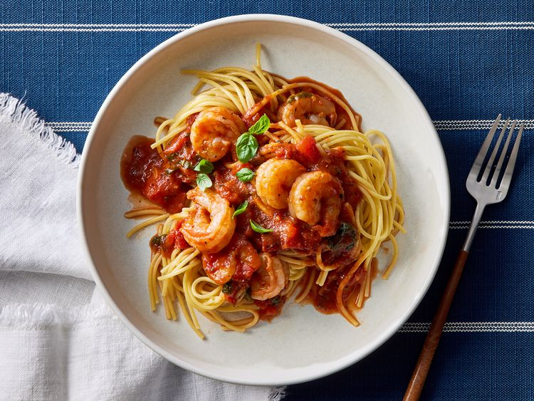

Lasagna

Description
TThis is great for a quick weeknight meal, but I could also see it as a candlelight dinner for two,” recipe developer Juliana Hale says of this shrimp marinara recipe
Ingredients
- Pasta
- Oil
- Shrimp
- Seasonings
- Canned tomatoes
- Balsamic vinegar
Steps
- Make the spaghetti
- Cook the shrimp and transfer to a plate
- Cook the garlic and red pepper to the skillet and cook until fragrant
- Stir in the remaining ingredients and bring to a boil, then simmer until thickened
- Return the shrimp to the skillet and cook until heated through
- Serve over spaghetti and garnish with fresh basil